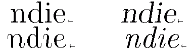
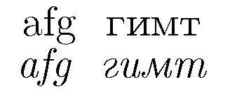
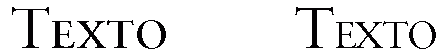

Cursivas, negritas y versalitas
Los estilos básicos en la composición tipográfica
Una familia tipográfica es un conjunto de fuentes que tienen ciertas similitudes de diseño. Normalmente, una familia incluye cuatro variantes: redonda, cursiva, negrita y cursiva negrita. Sin embargo, hay familias que prescinden de algunas (sobre todo la cursiva negrita) o añaden más, como las versalitas, variaciones en el grueso de los trazos, variaciones en el ancho de las letras, etc. En esta página nos centraremos en las cuatro variantes básicas y las versalitas.
La letra redonda es la forma básica y la que se usa normalmente en el cuerpo del texto. Para más detalles, véase Uso de la redonda.
La cursiva es la letra cuyos terminales adoptan a menudo una forma curva, como si quisieran unirse a la letra siguiente o anterior al estilo de la escritura caligráfica. En la figura siguiente se pueden ver remates de letras redondas (línea superior) y cursivas (línea inferior) tanto derechas (izquierda) como inclinadas (derecha). Lo que caracteriza la cursiva no es, como se piensa normalmente, la inclinación, sino la forma de los terminales y el diseño general. Compárese el trazo recto que cruza las astas en el extremo inferior de las letras redondas y los ángulos, con el trazo curvo y continuo de las letras cursivas.

Aunque hoy estamos acostumbrados a ver las letras redondas y cursivas emparejadas, en su origen fueron diseños completamente independientes, de forma que las redondas no tenían cursivas y las cursivas no tenían redondas. Esto se puede apreciar en la siguiente figura con algunas letras cuya forma es distinta en redonda (arriba) y cursiva (abajo) (también con ejemplos del alfabeto cirílico):

Las letras cuya forma en cursiva son distintas varían de un tipo a otro. Aparte del énfasis, el principal uso de las cursivas es señalar las palabras que, sin ser nombres propios, no tienen un uso conforme al léxico español: extranjerismos, términos usados impropiamente, etc. Para más detalles, véase Uso de la cursiva.
La letra negrita tiene los trazos más gruesos que la redonda y su aparición es relativamente reciente, de finales del siglo XIX. Ha habido cierta tendencia evitarla porque destruye la uniformidad del gris tipográfico y llama demasiado la atención. Por ello, se uso se ha restringido a títulos, epígrafes, voces en diccionarios y similares. Sin embargo, si lo que se pretende es que el lector encuentre fácilmente un punto del texto o justamente llamar mucho la atención, la negrita puede ser adecuada. En Internet, como énfasis tiene la ventaja sobre la cursiva de que es más legible en una pantalla.
La negrita cursiva debe utilizarse con mucha prudencia y tal vez no deba ir más allá de servir para los títulos de alguna subdivisión del texto.
La versalita tiene la forma de las versales (la palabra versal es sinónima de mayúscula) pero de un tamaño cercano a las minúsculas (generalmente algo mayor). Pocas familias incluyen versalitas, por lo que algunos programas simplemente toman la mayúscula y la reducen de tamaño. En la figura que sigue se muestra por qué nunca deben usarse versalitas falsas o seudoversalitas (derecha): están menos espaciadas, son más estrechas y su trazo es mucho más fino y con mayor contraste que el correcto (izquierda), lo que degrada la uniformidad visual del texto.

Por su carácter híbrido, la versalita ha tenido uso como minúscula enfatizada (por ejemplo, dentro de una cursiva o para los nombres en bibliografías) y como mayúscula disminuida (en los titulillos de los folios y en las siglas).
Más
- Uso de las minúsculas y mayúsculas
- Siglas: ¿versal o versalita?
- Las abreviaciones: siglas, abreviaturas, símbolos…
- Siglas bibliográficas
- El acceso a la información en los libros
- La economía ortotipográfica en las bibliografías
- La Ortografía académica del 2010
- Las notaciones científicas en la Ortografía académica
- Raya, menos y guion
- Los paréntesis
- Kerning: el volado de las letras